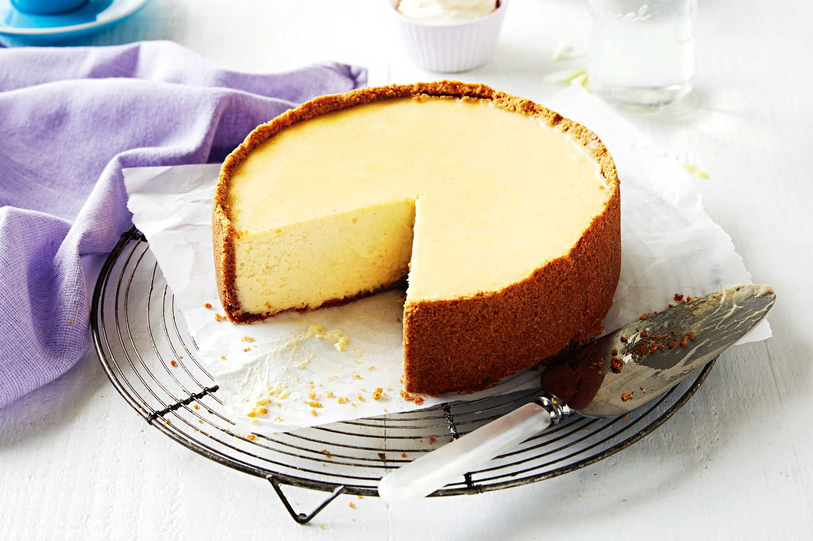

The Most Creamiest NewYork Cheescake Ever!

Description
Ingredients
- 250g digestive biscuits
- 150g butter, melted
- 500g cream cheese, at room temperature
- 3/4 cup (165g) caster sugar
- 2 tbsp plain flour
- 1 tsp vanilla bean paste
- 1 tsp lemon rind, finely grated
- 1 tbsp lemon juice
- 2 Coles Australian Free Range Eggs
- 300g sour cream
Steps
- Preheat oven to 150C. Grease and line the base and side of a 20cm (base measurement) springform pan.
- Process biscuits in a food processor until finely crushed. Add the butter and process until well combined. Spoon into prepared pan. Use a straight-sided glass to spread and press over the base and side. Place in fridge for 30 mins to chill.
- Use an electric mixer to beat cream cheese and sugar in a bowl until smooth. Add flour, vanilla, lemon rind and lemon juice. Beat until combined. Add the eggs. Beat until smooth. Add sour cream. Beat until just combined. Pour into base.
- Place pan on a baking tray. Bake for 1 hour or until just set. Turn oven off. Cool in oven, with door ajar, for 2 hours. Chill for 3 hours before serving.